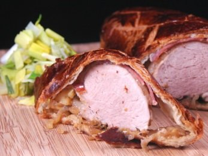

Filet mignon en croûte
Ingredients
4×
- 1 oignon
- beurre
- 1 filet mignon
- sel
- poivre
- 1 pâte feuilletée
- 2 tranches de jambon
- 100 g de gruyère râpé
- 1 jaune d'oeuf

Préparation
Étape 1
Émincer 1 oignon et le rissoler au beurre dans une sauteuse. Le retirer.
Étape 2
Saisir 1 filet mignon de chaque côté, puis cuire 10min à feu doux. Ajouter les oignons 5min. Ajouter du sel et du poivre.
Étape 3
Dérouler 1 pâte feuilletée, y poser 2 tranches de jambon et 100 g de gruyère râpé. Saler, poivrer, puis déposer le filet et sa sauce aux oignons.
Étape 4
Refermer la pâte autour de la viande et souder au pinceau avec 1 jaune d'oeuf.
Étape 5
Cuire 45min à 200ºC.